Temple
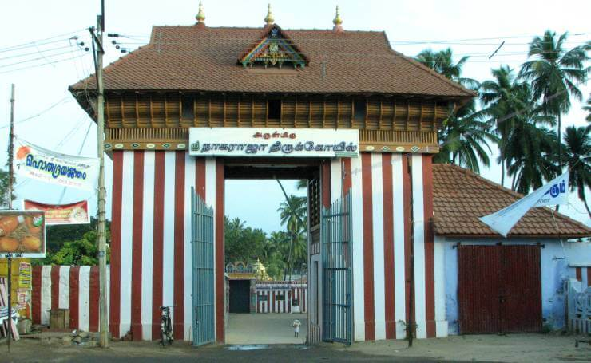
Nagaraja Temple, Nagercoil
Nagercoil is a beautiful town that offers peaceful and serene sightseeing places in Tamil Nadu. However, what attracts devotees to this town is its famous Nagaraja Temple. Located in Nagercoil, the temple is dedicated to the King of Serpents – Nagaraja. The inscriptions and literary evidence present at the temple complex indicate being worshipped by both Jains and Hindus. The original temple built in the pre 12th century only had the Jain iconography of the Tirthankaras and Padmavati Devi. New Hindu shrines were added to its complex in the 17th century. Since then, the iconographies of both religions have been a part of the temple’s sanctum.
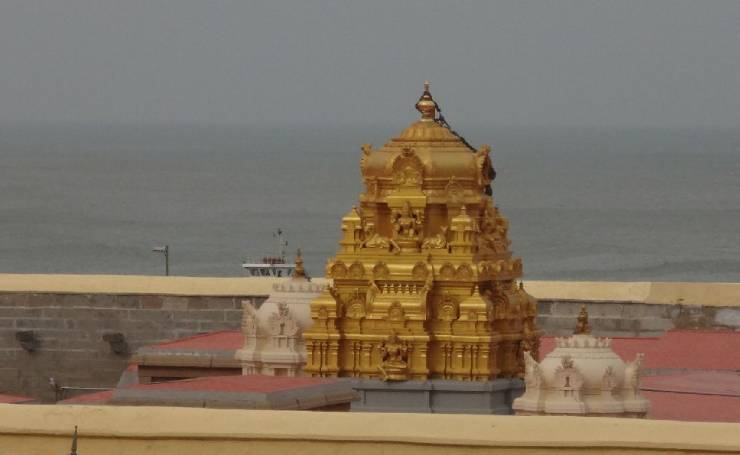
Kumari Amman Temple, Kanyakumari
Dedicated to the virgin Goddess Kanya Kumari, an avatar of Goddess Shakti, the temple dates back to 3000 years. Its complex has a deity in the form of a beautiful girl holding a string of beads in her right hand. Mythological beliefs state that Goddess Shakti took this avatar upon being requested by the Devtas to save them from the Demon King Banasura. As he was blessed by Lord Shiva for only being vanquished by a virgin girl, the Goddess took this avatar to defeat him. However, enchanted by her beauty, the Banasura tried to force her into a marriage that eventually became the cause of his death.
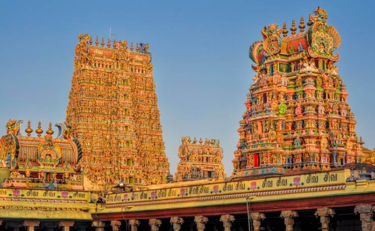
Meenakshi Amman Temple, Madurai
Meenakshi Amman Temple, located in Madurai, is one of the famous Shiva temples in Tamil Nadu which was built during the Nayak rule. Also known as the Meenakshi-Sundareshwar Temple, it is dedicated to Goddess Parvati as Meenakshi and her consort Lord Shiva as Sundareshwar. This Shiva temple in Tamil Nadu holds great importance for both tourists and locals and is an integral part of South India’s culture. All the important festivals of Tamil Nadu are celebrated here with great pomp and show, especially the Chithirai Festival. It signifies the celestial marriage of Meenakshi and Sundareswarar, drawing a massive crowd of devotees.
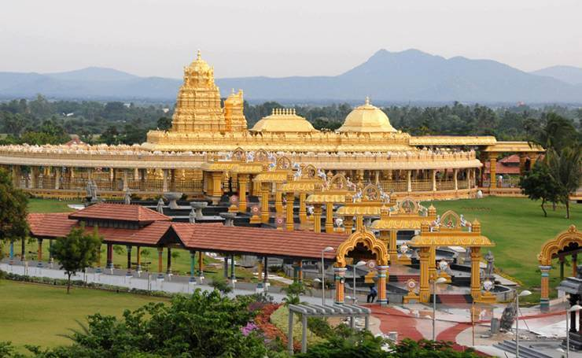
Sri Laxmi Narayanan Golden Temple, Vellore
Also known as the Sripuram Golden Temple, it is located at Vellore in Tamil Nadu and is a part of almost all the south India tour packages. The temple is dedicated to Laxmi, the Goddess of wealth and prosperity and entirely built with pure gold, making it famous as the Golden Temple. Its outstanding carving, sculptures, artwork, and exquisite lighting further give it a unique charm. One of its kinds in the world, this Golden Temple of Tamil Nadu is surrounded by water and offers a magnificent sight to behold during the night.
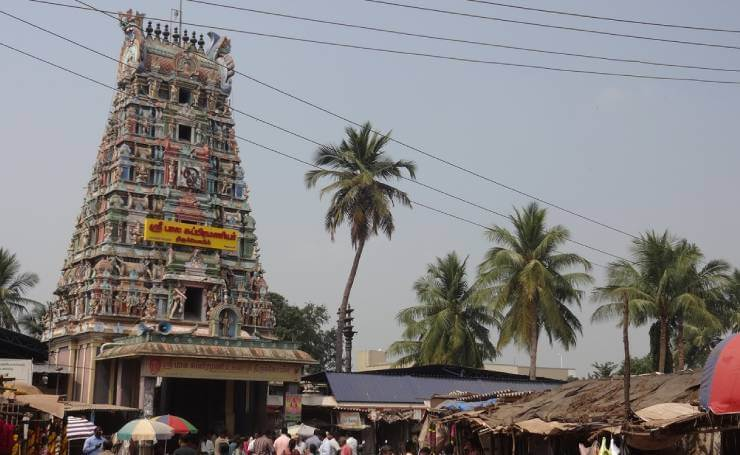
Bala Murugan Temple, Siruvapuri
Tamil Nadu is home to several famous Murugan temples, and one of them is the Bala Murugan temple in Siruvapuri. Murugan is another name for Lord Karthikeya, son of Lord Shiva and Goddess Parvati. The temple is 500 years old and famous among devotees to fulfil their wishes. Owing to this, hundreds of devotees visit this Murugan temple in Tamil Nadu each day to worship Lord Karthikeya and wish upon it. Besides, the temple complex has a shrine dedicated to Lord Murugan and his consort Devi Valli as depicted in wedlock. It is visited by couples who wish to get married.
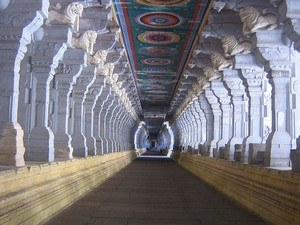
Navapashanam Temple, Devipattinam
Navagraha temples in Tamil Nadu are a set of nine temples, each of them dedicated to one of the nine planetary deities. One of these famous Navagraha temples is the Navapashanam Temple located in Devipattinam, Tamil Nadu. The significance of this temple centres on the fact that devotees can worship all the nine planetary deities at once. It is also a famous Hindu pilgrimage site along with the Ramanathaswamy Temple at Rameshwaram, and the Adi Jagannatha Perumal Temple at Thiruppullani. Devotees believe that the shrines of the planetary deities at this Navagraha temple in Tamil Nadu were built by Lord Ram, an avatar of Lord Vishnu.

Kumbakonam Brahma Temple, Kumbakonam
Kumbakonam Brahma Temple in Tamil Nadu is one of the famous pilgrimage sites for the Hindus that is located in Thanjavur district. The temple is primarily dedicated to Lord Vishnu as Vedanarayana Perumal. Its sanctum also has a deity of Brahma which is placed on the right side of Lord Vishnu’s deity, along with Goddesses Saraswati and Gayatri. On the left side is Yoganarasimha with Bhoodevi and Sridevi. Since Lord Brahma is said to be cursed for not being worshipped, the Kumbakonam Brahma Temple in Tamil Nadu is one of the rare temples dedicated to him in India.
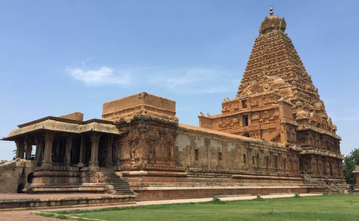
Brihadeeswarar Temple, Thanjavur
Brihadeeswarar or Brihadisvara is yet another famous Shiva temple in Tamil Nadu. It was built during the Chola Dynasty in the 11 century AD. The temple is located in the Thanjavur district and enjoys the status of a UNESCO World Heritage Site as one of the Great Living Chola Temples in India. Besides its magnificent structure, the 216 feet tall Vimana, along with its 80 tonnes Kumban, stands in the temple complex and attracts tourists interested to learn about great architectural designs from Indian history. As one of the famous Shiva temples in Tamil Nadu, it is visited by thousands of devotees every day.
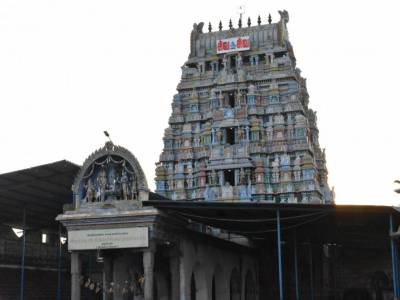
Arulmigu Brahmapureeswarar Temple, Tirupattur
The mythological reference of this temple tells us the story of Lord Brahma’s overwhelming pride which made him feel more powerful than Shiva. This sense of pride provoked Lord Shiva to destroy Lord Brahma’s fifth head and curse him to lose all his powers. Realizing his mistake, Lord Brahma offered huge penance to Lord Shiva at various places. During his pilgrimage, he worshipped the Lord under a tree at the temple’s site and took water for the rituals from the nearby tank, which was named Brahma Theertham. As Brahma worshipped Lord Shiva at this place, it is named Brahmapureeswarar.
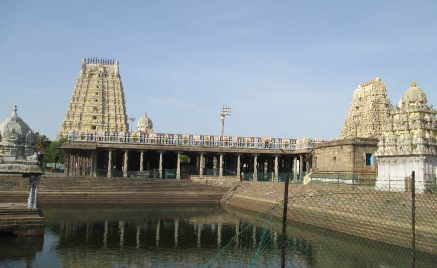
Ekambareswarar Temple, Kanchipuram
Tamil Nadu has many famous temples that are dedicated to Lord Shiva. One of them is the Ekambareswarar Temple, located in Kanchipuram. It is famous as one of the Pancha Bhoota Sthalas and signifies the element Earth. Devotees visit the temple to worship Lord Shiva, as Ekambareswarar or Ekambaranathar, in the form of a Lingam and an idol Prithvi Lingam. Legend has it that Goddess Parvati used to worship Lord Shiva in the form of Prithvi Lingam (Shiva Lingam made of sand) at this place, under a mango tree. The lord, impressed by this gesture, materialized in person and married the Goddess.

Ramanathaswamy Temple, Rameshwaram
Ramanathaswamy Temple in Rameshwaram is one of the 12 Jyotirlinga temples and a holy pilgrimage site for the Hindus. It is believed that the Shiva Lingam placed at the temple was built and worshipped by Lord Ram before crossing the bridge to Lanka, and that is where the name Ramanathaswamy was derived. Lord Ram wanted to seek forgiveness from his lord for the sins he would commit during the war against Ravana. He requested Hanuman to bring a Lingam from the Himalayas. However, with his delayed arrival, Lord Ram decided to build a Lingam from sand, which is placed at the sanctum. The temple has another lingam which was brought from Kailash and is called Vishwalingam.
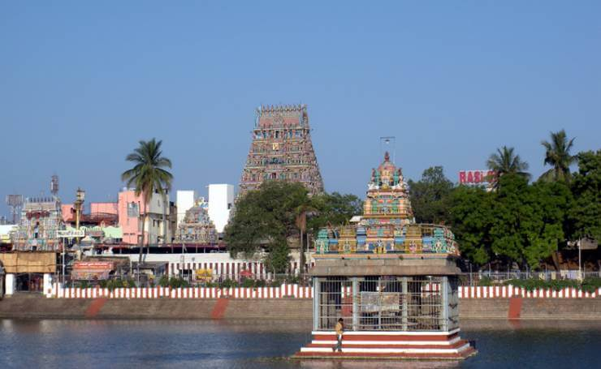
Kapaleeshwarar Temple, Chennai
This temple is located in Mylapore, a district of Chennai in Tamil Nadu. It was built in the 7th century CE under the reign of Pallava King. However, the original structure was destroyed by the Portuguese, and the Kapaleeshwarar Temple structure that stands today was restored by the Vijayanagara Kings in the 16th century. Dedicated to Lord Shiva, the temple is among the famous pilgrimage sites that attract devotees from all over the country. Legends say that Goddess Parvati, as Mayil, performed a huge penance for Lord Shiva at the site. The temple complex has a small shrine of the Goddess in the form of a peahen placed under the Punnai tree and depicts her story.
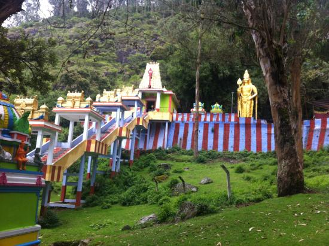
Elk Hill Murugan Temple, Ooty
Besides being one of the popular hill stations in Tamil Nadu, Ooty is home to the Elk Hill Murugan Temple, dedicated to Lord Murugan. This famous Murugan temple in Tamil Nadu catches your eye for its similarity to the Batu Caves in Malaysia. The temple is perched atop a small hill named Elk Hill and surrounded by a serene atmosphere with picturesque views. Along with the presiding 40 feet deity of Lord Murugan that resembles the deity at Batu Caves, the temple also houses the deities of Lord Ganesha, Lord Shiva, and Goddess Shakti, also known as Kali.
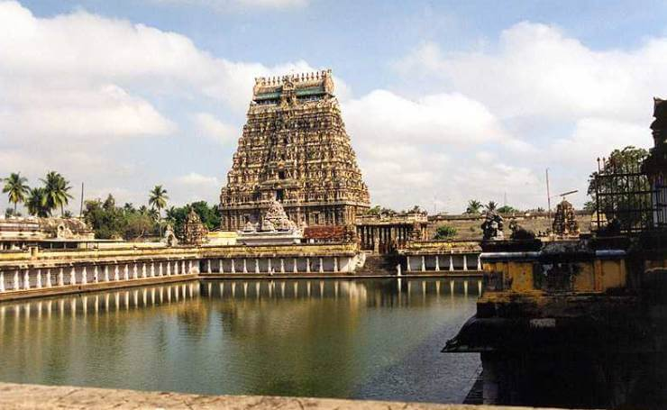
Thillai Nataraja Temple, Chidambaram
As the name says, the temple is dedicated to the Nataraja avatar of Lord Shiva, a divine dancer. It is among the famous ancient temples in Tamil Nadu known for their religious and architectural significance. People believe that this temple is located at the centre of Earth’s magnetic field. Its sanctum is named Chitsabha and houses the deities of Natraja and his consort Sivakamasundri. The temple was built in the 11th century during the Pallava rule. It is one of the Pancha Bhoota Sthalas dedicated to the five elements of the universe, namely Earth, Air, Fire, Water, and Space, and signifies the element Space.
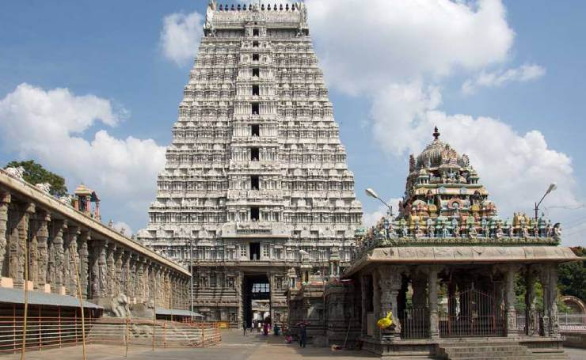
Annamalaiyar Temple, Thiruvannamalai
We conclude our list with another most significant Pancha Bhoota Sthala that signifies the element Agni. The temple is located on the foot of Annamalai hills and dates back to the 9th century of the Chola Dynasty. It is built in Dravidian style architecture and showcases the brilliant skills of artisans of that time. While the temple is usually crowded with tourists and locals, the footfall increases during the annual ‘Karthigai Deepam Festival’. Devotees celebrate the festival wearing vibrant attires, and their huge possession comprises drummers and dancers.